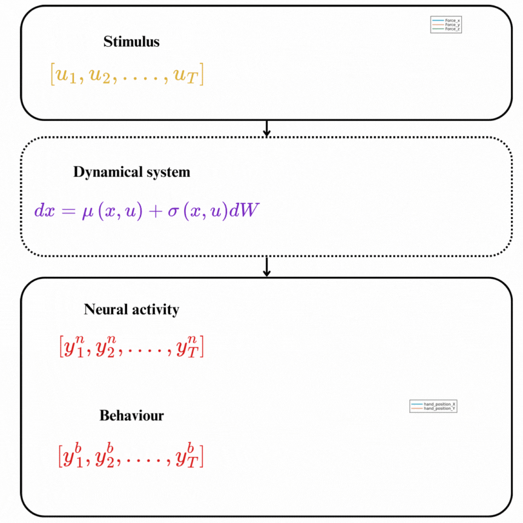

NeuroDynamics.jl: Generative Modeling of Neural Dynamics
NeuroDynamics.jl is a Julia package for scalable and efficient generative modeling of neural dynamics.
It provides the necessary tools to infer and simulate the dynamics of neural systems from empirical data (e.g., electrophysiological recordings, calcium imaging data, behavioural recordings, etc.). The whole idea is viewing these empirical data as partial noisy observations of a underlying continous stochastic process which we model as a system of stochastic differential equations (SDE) that we try to infer.

NeuroDynamics.jl is still in its enfancy and under active development. We welcome contributions from the community to help improve the package.
Feature Summary
The current key features of NeuroDynamics.jl include:
- A library of models of neural dynamics across different scales of organization and abastraction (e.g., single neurons, neural populations, networks of neural populations).
- A flexible and user-friendly interface for specifying differntiable and composable neural models.
- A scalable and efficient inference approach for infering the parameters of (Universal) ODEs/SDEs.
- Sampling, simulation, and visulization of the dynamics of infered systems.
Installation
To install NeuroDynamics.jl, you can run the following command in the Julia REPL:
using Pkg
Pkg.dev("https://github.com/elgazzarr/NeuroDynamics.jl")Getting Started
To get started with NeuroDynamics.jl, we recommend checking out the tutorials and examples.
Citing NeuroDynamics.jl
If you use NeuroDynamics.jl in your research, please consider citing the following paper:
@article{elgazzar2024universal,
title={Universal Differential Equations as a Common Modeling Language for Neuroscience},
author={ElGazzar, Ahmed and van Gerven, Marcel},
journal={arXiv preprint arXiv:2403.14510},
year={2024}
}